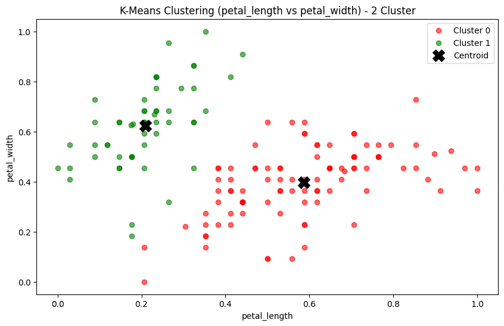
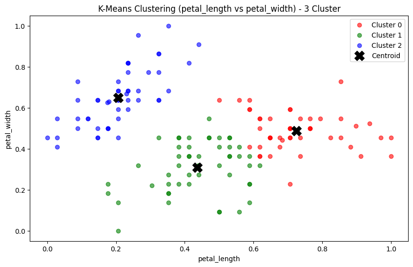
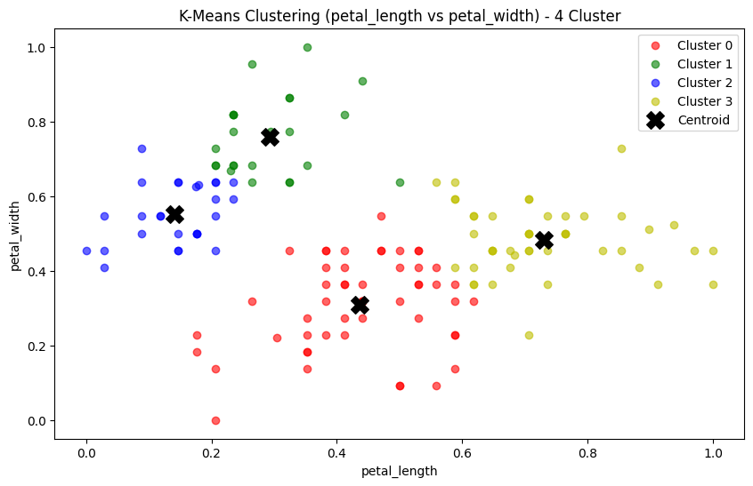
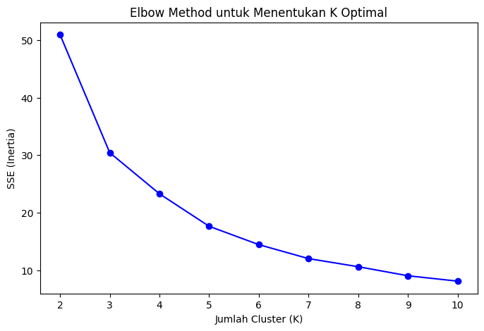
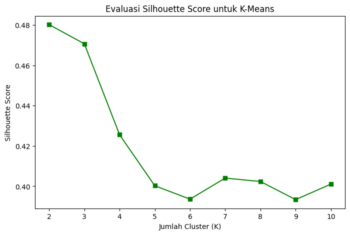

Clustering Iris dataset dengan K- Mean#
%pip install pymysql
%pip install psycopg2
Requirement already satisfied: pymysql in /usr/local/lib/python3.11/dist-packages (1.1.1)
Requirement already satisfied: psycopg2 in /usr/local/lib/python3.11/dist-packages (2.9.10)
Kita ambil dataset dari database
import pymysql
import psycopg2
import numpy as np
import pandas as pd
def get_mysql_data():
conn = pymysql.connect(
host="pendatviomysql-39-projectvioo.h.aivencloud.com",
user="avnadmin",
password="AVNS_nnGCVuLriFaCit_hSPr",
database="myiris",
port=20305
)
cursor = conn.cursor()
cursor.execute("SELECT * FROM irismysql") # Select all records from the table
data = cursor.fetchall() # Fetch all rows
conn.close()
# Convert to Python list
data_list = [list(row) for row in data]
# Convert to NumPy array
data_numpy = np.array(data_list)
return data_list
def get_pg_data():
conn = psycopg2.connect(
host="pg-30810f3a-projectvioo.h.aivencloud.com",
user="avnadmin",
password="AVNS_zzD9DhqapmhcWhqwe5C",
database="defaultdb",
port=20305
)
cursor = conn.cursor()
cursor.execute("SELECT * FROM iris_post") # Select all records from the table
data = cursor.fetchall() # Fetch all rows
cursor.close()
conn.close()
# Convert to Python list
data_list = [list(row) for row in data]
# Convert to NumPy array
data_numpy = np.array(data_list)
return data_list
columns = ['id', 'Class', 'sepal_length', 'sepal_width']
data_mysql = pd.DataFrame(get_mysql_data(), columns=columns)
columns = ['id', 'Class', 'petal_length', 'petal_width']
data_pg = pd.DataFrame(get_pg_data(), columns=columns)
df_merged = pd.merge(data_mysql, data_pg, on=["id", "Class"], how="inner")
print(df_merged)
id Class sepal_length sepal_width petal_length petal_width
0 1 Iris-setosa 1.4 0.2 5.1 3.5
1 2 Iris-setosa 14.0 2.0 40.9 30.0
2 3 Iris-setosa 1.3 0.2 4.7 3.2
3 4 Iris-setosa 1.5 0.2 4.6 3.1
4 5 Iris-setosa 1.4 0.2 5.0 3.6
.. ... ... ... ... ... ...
145 146 Iris-virginica 5.2 2.3 6.7 3.0
146 147 Iris-virginica 5.0 1.9 6.3 2.5
147 148 Iris-virginica 5.2 2.0 6.5 3.0
148 149 Iris-virginica 5.4 2.3 6.2 3.4
149 150 Iris-virginica 5.1 1.8 5.9 3.0
[150 rows x 6 columns]
Tahap Preprocessing#
pada tahap ini saya menggunakan LOF (local Outlier Factor) untuk mendeteksi Outlier dan memperbaiki nya menggunakan regresi linear, hal ini di lakukan untuk menghindari ketidakseimbangan data antar kelas bunga Iris dan juga menjaga jumlah data, dan alasan saya menggunakan regresi linear karena relatif sederhana dibandingkan algoritma regresi lain serta lebih akurat dibanding menggunakan rata rata / means.
penjelasan Tahap preprocessing ini ada di Table of Content bagian Preprocessing.
import pandas as pd
import numpy as np
from sklearn.linear_model import LinearRegression
from sklearn.neighbors import LocalOutlierFactor
# Dataframe awal dengan data kotor dan outlier
datab = df_merged.copy(deep=True)
feature_columns = ["sepal_length", "sepal_width", "petal_length", "petal_width"]
# Deteksi outlier menggunakan LOF
clf = LocalOutlierFactor(n_neighbors=20)
outlier_labels = clf.fit_predict(datab[feature_columns])
datab["outlier_label"] = outlier_labels
# Hitung jumlah data normal dan outlier
num_outliers = (datab["outlier_label"] == -1).sum()
num_normal = (datab["outlier_label"] == 1).sum()
# Pisahkan data menjadi normal dan outlier
df_normal = datab[datab["outlier_label"] == 1]
df_outlier = datab[datab["outlier_label"] == -1]
# Iterasi setiap kelas untuk memperbaiki outlier
classes = df_normal["Class"].unique()
for class_name in classes:
# Filter data normal berdasarkan kelas
class_data_normal = df_normal[df_normal["Class"] == class_name]
# Dapatkan batas minimum dan maksimum untuk setiap fitur
sepal_length_min = class_data_normal["sepal_length"].min()
sepal_length_max = class_data_normal["sepal_length"].max()
# Iterasi melalui data outlier pada kelas tersebut
for idx, row in df_outlier[df_outlier["Class"] == class_name].iterrows():
# Generate nilai random untuk sepal_length dalam batas normal
random_sepal_length = np.random.uniform(sepal_length_min, sepal_length_max)
# Gunakan regresi linear untuk memperbaiki fitur lainnya
predictors = ["sepal_length"] # Prediktor tunggal
targets = ["sepal_width", "petal_length", "petal_width"] # Target yang akan diprediksi
for target in targets:
# Latih regresi linear pada data normal
model = LinearRegression()
model.fit(class_data_normal[predictors], class_data_normal[target])
# Prediksi nilai target berdasarkan nilai random
predicted_value = model.predict(pd.DataFrame([[random_sepal_length]], columns=["sepal_length"]))
# Perbarui nilai outlier
datab.loc[idx, target] = predicted_value[0]
# Ganti nilai random untuk sepal_length
datab.loc[idx, "sepal_length"] = random_sepal_length
# Hapus kolom "outlier_label" setelah perbaikan
df_cleaned = datab.drop(columns=["outlier_label"])
# Hitung jumlah data setelah perbaikan
num_total = len(df_cleaned)
# Cetak hasil
print(f"Jumlah outlier yang terdeteksi: {num_outliers}")
print(f"Jumlah data normal: {num_normal}")
print(f"Jumlah total data setelah perbaikan: {num_total}")
# Dataframe hasil setelah perbaikan
# print(df_cleaned.to_string(index=False))
Jumlah outlier yang terdeteksi: 7
Jumlah data normal: 143
Jumlah total data setelah perbaikan: 150
Tahap Clustering#
Algoritma K-Means adalah salah satu metode clustering yang digunakan untuk mengelompokkan data ke dalam K jumlah kelompok berdasarkan kesamaan karakteristik.
Cara Kerja Algoritma K-Means
Tentukan jumlah kluster k
Menentukan Centroid Awal → Centroid adalah titik tengah dari masing-masing cluster, yang di insialisasi dengan dipilih secara acak
Mengelompokkan Data → Setiap data dihitung jaraknya dengan rumus eucldian distance ke centroid dan dimasukkan ke dalam cluster terdekat.
Mengupdate Centroid → Setelah semua data masuk ke cluster, centroid diperbarui dengan menghitung rata-rata atau means pada titik data dalam cluster dengan langkah ini centroid kemungkinan akan bergeser sedikit demi sedikit.
Iterasi Berulang → Langkah 3 dan 4 dilakukan berulang kali hingga centroid tidak berubah atau mencapai batas iterasi yang ditetapkan.
import matplotlib.pyplot as plt
import numpy as np
from sklearn.cluster import KMeans
from sklearn.preprocessing import StandardScaler
from sklearn.preprocessing import MinMaxScaler
def iris_cluster(dataset, k, show=True):
# Pilih 2 fitur untuk clustering
feature_1 = "petal_length"
feature_2 = "petal_width"
df_cluster = dataset[[feature_1, feature_2]].copy(deep=True) # Mengambil dua fitur yang dipilih
# Normalisasi fitur dengan StandardScaler
scaler = MinMaxScaler()
df_cluster[[feature_1, feature_2]] = scaler.fit_transform(df_cluster[[feature_1, feature_2]])
# Lakukan clustering dengan K-Means
kmeans = KMeans(n_clusters=k, random_state=42, n_init=10)
df_cluster["Cluster"] = kmeans.fit_predict(df_cluster)
# Visualisasi hasil clustering menggunakan Matplotlib
plt.figure(figsize=(10,6))
# Warna untuk masing-masing cluster
colors = ['r', 'g', 'b', 'y', 'c', 'm'] # Tambah warna jika k > 3
for cluster in range(k):
clustered_data = df_cluster[df_cluster["Cluster"] == cluster]
plt.scatter(clustered_data[feature_1], clustered_data[feature_2], color=colors[cluster % len(colors)], label=f"Cluster {cluster}", alpha=0.6)
# Plot centroid
centroids = kmeans.cluster_centers_
plt.scatter(centroids[:, 0], centroids[:, 1], color='black', marker='X', s=200, label="Centroid")
plt.xlabel(feature_1)
plt.ylabel(feature_2)
plt.title(f"K-Means Clustering ({feature_1} vs {feature_2}) - {k} Cluster")
plt.legend()
plt.show()
duacluster = iris_cluster(df_cleaned, 2)
tigacluster = iris_cluster(df_cleaned, 3)
empatcluster = iris_cluster(df_cleaned, 4)



Tahap Evaluasi Clustering#
Kode ini melakukan K-Means Clustering pada dataset Iris, menggunakan dua fitur yaitu petal_length dan petal_width
untuk mengelompokkan data ke dalam K jumlah cluster yang ditentukan.
Data yang dipilih disalin terlebih dahulu agar tidak merusak data df_cleaned. Setelah itu, K-Means diterapkan dengan n_clusters=k, di mana setiap titik data dikelompokkan berdasarkan centroid terdekat.
Visualisasi dengan scatter plot yang menunjukkan titik data dalam berbagai warna sesuai cluster masing-masing. Selain itu, centroid setiap cluster juga dipetakan dengan simbol “X” berwarna hitam untuk membantu interpretasi kelompok. Fungsi ini memungkinkan pengguna untuk menjalankan clustering dengan berbagai nilai K (misalnya, K=2, K=3, K=4), sehingga memudahkan eksplorasi pola dalam dataset Iris. 🚀😊
import matplotlib.pyplot as plt
import numpy as np
from sklearn.cluster import KMeans
from sklearn.metrics import silhouette_score
# Pilih dua fitur untuk clustering
feature_1 = "petal_length"
feature_2 = "petal_width"
df_cluster = df_cleaned[[feature_1, feature_2]].copy(deep=True) # Pilih fitur
# Menentukan rentang K untuk evaluasi
max_clusters = min(10, len(df_cluster) - 1) # Cegah nilai K terlalu besar
cluster_range = range(2, max_clusters + 1)
# Simpan hasil evaluasi
sse_values = []
silhouette_scores = []
# Iterasi untuk berbagai jumlah cluster
for k in cluster_range:
kmeans = KMeans(n_clusters=k, random_state=42, n_init=10)
labels = kmeans.fit_predict(df_cluster)
# Simpan SSE/Inertia
sse_values.append(kmeans.inertia_)
# Hitung silhouette score
silhouette_avg = silhouette_score(df_cluster, labels)
silhouette_scores.append(silhouette_avg)
print(f"K={k} --> SSE (Inertia): {sse_values[-1]:.4f}, Silhouette Score: {silhouette_avg:.4f}")
# --- Plot Elbow Method ---
plt.figure(figsize=(8,5))
plt.plot(cluster_range, sse_values, marker='o', linestyle='-', color='b')
plt.xlabel("Jumlah Cluster (K)")
plt.ylabel("SSE (Inertia)")
plt.title("Elbow Method untuk Menentukan K Optimal")
plt.xticks(cluster_range)
plt.show()
# --- Plot Silhouette Scores ---
plt.figure(figsize=(8,5))
plt.plot(cluster_range, silhouette_scores, marker='s', linestyle='-', color='g')
plt.xlabel("Jumlah Cluster (K)")
plt.ylabel("Silhouette Score")
plt.title("Evaluasi Silhouette Score untuk K-Means")
plt.xticks(cluster_range)
plt.show()
K=2 --> SSE (Inertia): 50.9226, Silhouette Score: 0.4802
K=3 --> SSE (Inertia): 30.4231, Silhouette Score: 0.4706
K=4 --> SSE (Inertia): 23.2822, Silhouette Score: 0.4255
K=5 --> SSE (Inertia): 17.6318, Silhouette Score: 0.4002
K=6 --> SSE (Inertia): 14.4450, Silhouette Score: 0.3936
K=7 --> SSE (Inertia): 12.0165, Silhouette Score: 0.4040
K=8 --> SSE (Inertia): 10.6099, Silhouette Score: 0.4023
K=9 --> SSE (Inertia): 9.0392, Silhouette Score: 0.3934
K=10 --> SSE (Inertia): 8.1027, Silhouette Score: 0.4011


Kode ini melakukan evaluasi clustering dengan K-Means, menggunakan Elbow Method dan Silhouette Score untuk menentukan jumlah cluster optimal.
Dua fitur yang digunakan untuk clustering adalah petal_length dan petal_width dari dataset df_cleaned. Rentang K untuk clustering ditentukan dari 2 hingga 10 atau maksimal jumlah data - 1 , karena melakukan clustering K= 1 atau k = jumlah data adalah tidak masuk akal untuk clustering
Kemudian, perulangan dilakukan untuk mengevaluasi berbagai jumlah cluster (K=2 hingga K=10). Setiap iterasi, K-Means dijalankan, lalu dihitung SSE (inertia) untuk melihat seberapa rapat titik dalam cluster, dan Silhouette Score untuk mengukur pemisahan antar cluster. Nilai SSE dan Silhouette Score dicetak untuk analisis lebih lanjut.
Terakhir, dua grafik dibuat:
Grafik Elbow method SSE inersia
Grafik rata rata siluet
Berdasarkan hasil analisis menggunakan Elbow Method, terjadi penurunan tajam pada nilai SSE (inertia) , dan nilai siluet yang relatif tinggi pada K = 3
menunjukkan bahwa pada titik ini, jumlah cluster cukup optimal. Meskipun Silhouette Score sedikit menurun di K=3, nilai tersebut tetap menjadi skor tertinggi kedua, ini menandakan bahwa pemisahan antar cluster masih cukup baik. Oleh karena itu saya rasa nilai optimal K = 3